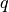

1. Chaos game czyli nauka panowania nad chaosem, dla programistów, w ramach spędzania wolnego czasu¶
Chaos game (gra w chaos) dla niewtajemniczonego brzmi dość złowrogo i przywodzi na myśl gry typu FPP, gdzie do tłumów kosmicznych najeźdźców strzela się z różnych strzelających urządzeń, najczęściej dość dużego kalibru.
Prawda nie jest aż tak atrakcyjna dla fanów e-sportu, aczkolwiek może sprawić, że przez chwilę opuścimy broń i zastanowimy się nad istotą chaosu (oczywiście tego policzalnego). Bo prawdą jest, że wiele rzeczy, które nazywamy chaosem oznacza coś czego nie rozumiemy i nie potrafimy wykorzystać, tak było ze statystyką, medycyną czy pogodą, jednak po latach badań nauczyliśmy się wydobywać z chaosu wiedzę.
Chaos game może nie jest aż tak użytecznym elementem teorii chaosu jak Atraktor Lorenza, czy bifurkacja, ale pozwoli w sposób widoczny, łatwy i przyjemny dotknąć natury zagadnienia.
1.1. O co chodzi z tym całym chaosem¶
Termin Chaos game został pierwszy raz podany przez Michaela F. Barnsleya (tak, tego od paprotki) w 1988 r. w słynnej publikacji Fractals Everywhere i dotyczył prostego algorytmu, który można opisać następująco:
Warunki początkowe
- W układzie współrzędnych wyznaczyć zbiór
wierzchołków wielokąta (najlepiej foremnego, Barnsley użył trójkąta równobocznego) .
- Losowo wybrać pierwszy punkt aktywny (może być dowolnym punktem na płaszczyźnie, wewnątrz lub na zewnątrz wielokąta, może być nawet jednym z jego wierzchołków, Barnsley użył punktu wewnątrz).
Algorytm
- Narysuj punkt aktywny.
- Wylosuj wierzchołek wielokąta z uwzględnieniem tabeli ograniczeń  (w pierwotnej wersji nie było ograniczeń).
- Wyznacz nowy punkt należący do odcinka łączącego punkt aktywny z wylosowanym wierzchołkiem wielokąta znajdący się odległości
od wylosowanego wierzchołka wielokąta, gdzie (w pierwotnej wersji ).
- Oznacz nowy punkt jako punkt aktywny.
Algorytm powtarzamy wyznaczoną ilość powtórzeń  . W literaturze stosuje się zazwyczaj , jako dość wydajny kompromis pomiędzy efektem wizualnym a łącznym czasem wykonania algorytmu.
. W literaturze stosuje się zazwyczaj , jako dość wydajny kompromis pomiędzy efektem wizualnym a łącznym czasem wykonania algorytmu.
W wyniku manipulacji parameterami oraz , podobno, można osiągnąć interesujące wizualnie wyniki, co mam nadzieję udowodnić w dalszej części.
Dla wygody zakładamy, że
- wszytkie wielokąty będą foremne,
- pierwszy wierzchołek każdego wielokąta będzie umiejscowiony na górze i będzie posiadał takie same współrzędne,
- pierwszy punkt aktywny będzie miał współrzędne
,
- wartości współrzędnych wierzchołków, będą większe od zera (jak to w grafice komputerowej),
- zaś domyślna ilość powtórzeń .
Oczywiście zachęcam do eksperymentowania z wartościami tych ustawień, jednak uprzedzam, nie mają zbyt dużego wpływu na osiągane wyniki.
1.2. Do dzieła¶
Zabawę zaczniemy od trójkąta równobocznego, a wyznaczone przez nas parametry będą przedstawiały się następująco:
Co oznacza:
- wielokąt będzie miał trzy wierzchołki,
- nowy punkt pojawi się w połowie odległości między punktem aktywnym a wylosowanym wierzchołkiem,
- ponieważ tabela ograniczeń jest pusta, wierzchołki losowane są bez żadnych dodatkowych ograniczeń.
Oto co otrzymujemy.
Pojawił się Trójkąt Sierpińskiego, całkiem atrakcyjny wizualnie układ, mimo losowości wybierania wierzchołków. Świetnie, spróbujmy teraz z większą ilością wierzchołków, następny w kolejce kwadrat, opisujemy go następująco:
Rezultat niestety nie zachwyca. Spróbujmy dla większej ilości wierzchołków, np. użyjmy pięciokąta i sześciokąta foremnego.
Chyba nie tędy droga, chaos jak to chaos rządzi się swoimi prawami, bardzo ładnie zadziałał na trójkącie, ale zmiana ilości wierzchołków daje wyniki na poziomie szumu, jedno co widzimy, to to, że pomimo wyboru punktu startowego na zewnątrz figury, prawie wszystkie punkty wylądowały wewnątrz.
Ponieważ zmiana ilości boków bez zmiany innych parametrów nie przyniosła zbyt spektakularnych efektów wracamy do kwadratu,
ale zmienimy parametr o połowę.

No to wygląda znacznie lepiej, duże uporządkowanie, aczkolwiek dużo punktów trafiło na niewielką powierzchnię.
Ciekawe co stanie się jeżeli pozmieniamy nieco parametr , np. nadając mu wartości odpowiednio 0.4, 0.6, 0.75 i 0.9.


Widać, że uporządkowanie chaosu przebiega nieregularnie i o ile dla wartości 0.25 i 0.4 wygląda obiecująco, przy 0.5 zanika, zaś dla 0.6 zdaje się wprowadzać jakieś “nitkowate” uporządkowanie o tyle dla > 0.75 wszystko zaczyna być wchłaniane przez “czarną dziurę”. Chciałoby się powiedzieć jak to w chaosie, biorąc pod uwagę pierwotne znaczenie tego słowa, jako kosmicznej pramaterii.
1.3. Więcej o tabeli ograniczeń¶
Dotychczas korzystaliśmy wyłącznie z pustej tabeli ograniczeń , zanim zaczniemy tam umieszczać wartości, należy się kilka słów wyjaśnienia, z czym to się je, to znaczy, co zawiera ta tablica i jak z niej korzystać.
Wyjdziemy jednak od sposobu w jaki losowane są wierzchołki, otóż wierzchołki figury użytej do gry przechowywane są w tablicy i w wyniku losowania wybierany jest jeden z indeksów tej tablicy, liczba całkowita z przedziału . W tabeli umieszczone będą odległości wylosowanego indeksu w stosunku do zbioru ostatnich losowań. Odległość oznacza ilość pozycji od danego indeksu. Weźmy pod uwagę zbiór czterech punktów:
jeżeli wylosowano wierzchołek o indeksie 0 to w odległości 0 znajduje się ten sam punkt, więc ograniczenie
oznacza, ni mniej ni więcej, tylko nowo wylosowany punkt, nie może być użyty, jeżeli został wylosowany poprzednim kroku.
Odległość 1 oznacza wierzchołki znajdujące się w odległości 1 (oczywiście w pierścieniu modulo ) od wybranego wierzchołka,
czyli dla podanego punktu będzie to . Analogicznie odległość 2 oznacza dla tego przypadku
a 3 .
Powyższe nakłada podstawowe ograniczenie na dopuszczalne wartości:
Każda wartość tablicy musi być liczbą całkowitą i należeć do zbioru
Ciekawiej zaczyna się robić gdy tabela ograniczeń ma więcej niż jeden element, działa to mniej więcej tak, że na pozycji
- 0 jest odległość dotycząca ostatniego udanego losowania
- 1 jest odległość dotycząca przedostatniego udanego losowania
- 2 jest odległość dotycząca przedprzed ostatniego udanego losowania
- i tak dalej, i tak dalej.
Uwaga! losowanie jest uznane za udane, wtedy i tylko wtedy, gdy wylosowany indeks nie spełnia tych odległości.
W tym celu wewnątrz aplikacji wspierającej grę w chaos musi być przechowywana lista ostatnio dokonanych udanych losowań o rozmiarze przynajmniej takim jak tabela ograniczeń . Przykład więcej niż jednej wartości w tabeli ograniczeń:
Ostatnie 2 losowania wyglądały następująco:
Tabla ograniczeń:
Wylosowano indeks 0 odległość od indeksu z ostatniego udanego losowania wynosi 2, warunek nie spełniony, ponawiamy losowanie. Wylosowano indeks 1 odległość od indeksu z ostatniego udanego losowania wynosi 1, ale odległość od przedostatniego wynosi 1 warunek nie spełniony, ponawiamy losowanie. Wylosowano indeks 3 odległość od indeksu z ostatniego udanego losowania wynosi 1, odległość od przedostatniego wynosi 2 warunek spełniony, losowanie udane.
Trochę to zakręcone, ale łatwiej będzie zrozumieć gdy zobaczymy wyniki. W bieżącej publikacji zajmować się będziemy tabelami ograniczeń zawierającymi nie więcej niż 2 elementy.
1.4. Gra z tabelą ograniczeń¶
Postaramy się teraz założyć ograniczeni przy pomocy niepustej tablicy .
Pozostaniemy przy kwadracie  , wartości i spróbujemy wykonać ćwiczenie
z jednoelementową tabelą ograniczeń o wartościach, odpowiednio 0, 1, 2 i 3.
, wartości i spróbujemy wykonać ćwiczenie
z jednoelementową tabelą ograniczeń o wartościach, odpowiednio 0, 1, 2 i 3.
No, to można nazwać sukcesem, elegancki fraktal przypominający mapę albo jakieś mury obronne. Próbujemy kolejnych wartości.
Jak widać, poza i , gdzie jedno jest odbiciem lustrzanym drugiego, pozostałe fraktale są od siebie bardzo różne.
Teraz spróbujemy użyć tabeli ograniczeń nakładanych na przedostatnie i przedprzedostatnie udane losowanie.
Jak widać w obu przypadkach i , o dziwo, otrzymaliśmy taki sam wynik bardzo różniący się od . Kolejna dziwna cecha chaosu, tak na parawdę nie wiadomo kiedy pojawi się jakiś niespodziewany porządek.
1.5. Bardziej złożone wielokąty¶
Pozwolę sobie zaprezentować tylko, kilka, bardziej złożonych wariantów dla pięcio i sześciokąta foremnego, na początek z pustą tabelą ograniczeń.
W przypadku pięciokąta mam małą uwagę, mimo że na stronie Wolfram, proponują użyć , lepszy rezultat (segmenty fraktala bardziej się ze sobą stykają) daje , gdzie oznacza słynną formułę złotego podziału (golden ratio)
Przykłady z pustą tabelą ograniczeń dla pięciokąta foremnego:
i sześciokąta foremnego:
Przykłady z niepustą tabelą ograniczeń, jednoelementową:
i dwuelementową:
Jak widać świat gry w chaos jest w stanie dostarczyć całkiem miłych wrażeń estetycznych, dać namiastkę
torzenia dzieł plastycznych bez chodzenia na kółko plastyczne. Główne założenia, które urzekają swoją prostotą, pozwalają
eksperymentować zarówno przez zmiany wartości parametrów  jak i generować trójwymiarowe fraktale w przestrzeni.
Tu ograniczyłem się do najczęściej publikowanych obiektów.
jak i generować trójwymiarowe fraktale w przestrzeni.
Tu ograniczyłem się do najczęściej publikowanych obiektów.
Przed nami część praktyczna, czyli, jak takie wyrosłe z chaosu fraktale wygenerować na swoim ekranie.
1.6. Zrób to sam¶
Tytuł niniejszego rozdziału pewnie niewiele mówi młodszym czytelnikom ale dla wielu, kojarzy się on z popularnym niegdyś programem promującym majsterkowanie. Co było charakterystyczne w tym programie, otóż prowadzący, Pan Adam Słodowy pokazywał różne czynności na ekranie i wiele z nich faktycznie sam wykonywał, natomiast jeżeli dana czynność była długotrwała np. wycinanie dość skomplikowanych kształtów z puszki po konserwie, przeważnie zaczynał tylko, po czym przerywał i mówił “ale ja już tutaj sobie przygotowałem” i wyciągał z pod stołu elegancko wykończony element.
Tak też i ja zrobię. Najpierw jednak o tym jak się do tego zabrałem.
Ponieważ algorytmy powinny być niezależne od technologii postanowiłem ograniczyć zestaw użytych narzędzi wg zasad:
- użyte technologie muszą być dostępne każdemu, za darmo na dowolnej platformie
- w obrębie użytych technologii nie będzie korzystane z dodatkowych bibliotek
- prezentacja ograniczy się do dwóch kolorów białego (tło) i czarnego (pisak)
Wybór padł na HTML5 i JavaScript. HTML5 bo ma dostępny element <canvas> wręcz idealny do tego typu operacji, javascript bo naturalnie się komponuje z HTML5 i może być użyty zarówno do opisania logiki problemu jak i do sterowania warstwą prezentacji.
Zgrubny podział na częśći:
- logiczną (logika biznesowa gry w chaos) skrypt
chaos-game.js- prezentacyjną (logika generowania fraktala i obsługi części wizualnej) skrypt
fractal.js- część spajająca (punkt wejścia ap likacji i kontener elementów graficznych) plik
index.html
1.6.1. Logika gry w chaos¶
function ChaosGame(n, r, q) {
// Private variables
this.n = n;
this.r = r;
this.q = q;
this.vertices = [];
this.log = [0, 0];
// Public interface
/**
* Creates the list of polygon vertices
*
* @param width - image width
* @param height - image height
* @param radius - radius of the circle where the polygon is "wpisany"
*/
this.init = function (width, height, radius) {
var angle = (2 * Math.PI) / this.n;
this.vertices = [];
// Image center point
var c = {
x: width / 2,
y: height / 2
};
// Create the first vertex
var v = {
x: c.x,
y: c.y - radius
};
// and add it to the vertices list
this.vertices.push(v);
// Create other vertices and add them to the vertices list.
// New vertices are created by rotating the previous point about an image center point.
for (var i = 1; i < this.n; i++) {
v = {
x: (v.x - c.x) * Math.cos(angle) - (v.y - c.y) * Math.sin(angle) + c.x,
y: (v.x - c.x) * Math.sin(angle) + (v.y - c.y) * Math.cos(angle) + c.y
};
this.vertices.push(v);
}
};
/**
* Returns the point calculated from given (x, y) coordinates
*
* @param x
* @param y
* @returns {{x: number, y: number}} new point
*/
this.getNextPoint = function (x, y) {
// Chose the vertex
var v = this.getVertex();
// and return new active point distant from the chosen vertex this.r * distance
// between the chosen vertex and the point generated previously.
return {
x: v.x * (1 - this.r) + x * this.r,
y: v.y * (1 - this.r) + y * this.r
};
};
// Private methods
/**
* Validates chosen vertex
*
* @param v
* @returns {boolean}
*/
this.valid = function (v) {
// If limitations list is empty every vertices index is valid
var enabled = this.q.length === 0;
// Check vertice index against every limitations list element
for (var i = 0; i < this.q.length; i++) {
if (this.q.length > 1 && this.q[0] !== this.q[1]) {
enabled =
this.log[0] !== ((v + (this.n + this.q[i])) % this.n)
&&
this.log[1] !== ((v + (this.n + this.q[(1 + i) % this.q.length])) % this.n);
}
else {
enabled = this.log[i] !== ((v + (this.n + this.q[i])) % this.n);
}
if (enabled === true) {
return true;
}
}
return enabled;
};
/**
* Returns vertex as a point and records its index in the log
*
* @returns {*}
*/
this.getVertex = function () {
var i = 0;
// Choose the vertice index and validate it
do {
i = Math.floor(Math.random() * 10000) % this.n;
} while (!this.valid(i));
this.log.unshift(i);
this.log.pop();
return this.vertices[i];
};
}
1.6.2. Generowanie fraktala¶
function Fractal(game, times, canvas, bgcolor, fgcolor) {
this.game = game;
this.canvas = canvas;
this.times = times;
this.fgcolor = fgcolor;
this.bgcolor = bgcolor;
this.render = function (x, y) {
var context = this.canvas.getContext('2d');
context.fillStyle = this.bgcolor;
context.fillRect(0, 0, this.canvas.width, this.canvas.height);
context.fillStyle = this.fgcolor;
while(times--) {
context.fillRect(x, y, 1, 1);
var point = this.game.getNextPoint(x, y);
x = point.x;
y = point.y;
}
};
}
1.6.3. Entry point aplikacji¶
<!DOCTYPE html>
<html>
<head>
<title>Chaos Game</title>
</head>
<body style="margin:auto;background:grey;text-align:center">
<canvas id="board"></canvas>
<script src="chaos-game.js"></script>
<script src="fractal.js"></script>
<script>
var n = 3, r = 0.5, q = [];
var times = 100000;
var size = 640;
var radius = (size / 2) - 20;
var bgcolor = '#FFF';
var fgcolor = '#000';
var canvas = document.getElementById('board');
canvas.width = size;
canvas.height = size;
var game = new ChaosGame(n, r, q);
game.init(canvas.width, canvas.height, radius);
var fractal = new Fractal(game, times, canvas, bgcolor, fgcolor);
fractal.render(0, 0);
</script>
</body>
</html>